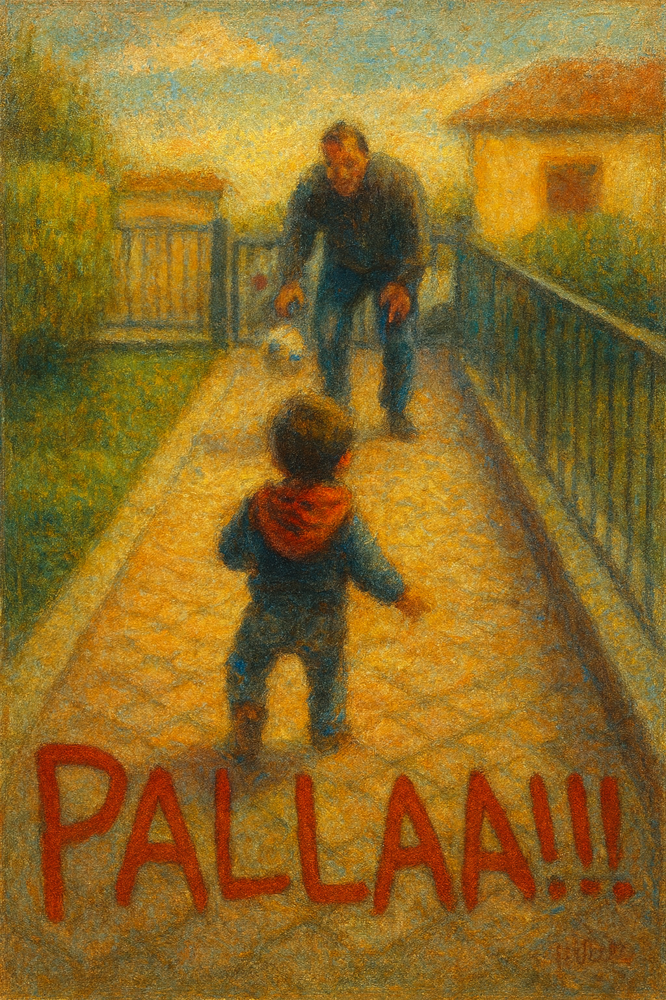

un viaggio nell'autismo verso la vita indipendente
“La vita si restringe o si dilata in proporzione al nostro coraggio.” Anaïs Nin

Questa è la storia di Lucio, un ragazzo autistico di 33 anni. Un cammino che inizia alla nascita, passando attraverso la selettività alimentare fino al dolore del bullismo e ad un ricovero in reparto psichiatrico.
Un racconto che evidenzia la fatica quotidiana di esistere in un mondo che spesso non ti riconosce e non ti capisce, ed arriva fino alla conquista – sofferta e ostinata – di una vita indipendente.
È anche la storia della sua famiglia, che passo dopo passo ha imparato a crescere insieme a lui. È un viaggio fatto di sfide, dolori, conquiste e sorrisi inaspettati.
Un racconto vero, a tratti duro, ma sempre pieno d’amore: perché, nonostante tutto, un altro mondo è possibile.
Il racconto di una vita che cresce e cerca il proprio spazio in una società spesso poco preparata ad accogliere la diversità.
Una storia in cui competenza, amore e responsabilità si intrecciano: la famiglia come rete e forza quotidiana.
L’autonomia come conquista costruita passo dopo passo, tra difficoltà e piccole grandi vittorie.
"PALLA! Qualcuno, forse, leggendo il titolo si sarà chiesto: “Ma che cavolo di titolo è Palla!?” “Com’è possibile che un libro che parla di autismo e di vita indipendente si chiami Palla!?” La spiegazione è semplice e tenera: “palla” è stata una delle prime parole che il mio nipotino Leon ha pronunciato quando aveva appena dieci mesi. Dopo “mamma”, “papà” e "pappa"… “palla”! E la palla, paradossalmente, è anche uno dei giochi più complessi per i bambini autistici, perché implica movi-mento, coordinazione, attenzione reciproca. Inoltre come tutti sappiamo la palla tu la tiri ma non puoi mica sapere dove andrà a finire. Ci provi, ci speri, ci credi. A volte prende il palo e ti lascia l'amaro in bocca, ma altre volte... altre volte entra dritta in rete. Ed è li che capisci che vale sempre la pena di tentare. Il motivo è tutto qui. Perchè questo è un libro di battaglie quotidiane, di fatiche, di inciampi, ma anche di speranza. È un libro per dirvi : “Credeteci!” Perché un altro mo(n)do — con una “n” in più che fa la differenza — è davvero possibile."
Il libro può essere presentato in scuole, biblioteche, associazioni e incontri dedicati al tema dell’autismo e della vita indipendente.
Per organizzare una presentazione:
“Un racconto autentico e profondo che aiuta a capire cosa significa vivere l’autismo in famiglia e aiutare il proprio figlio a costruire il suo progetto di vita autonomo e indipendente.”
“Una testimonianza coraggiosa che parla di dolore ma anche di speranza.”
“Un libro necessario per chi lavora nel sociale e per chi vuole comprendere meglio questo mondo.”